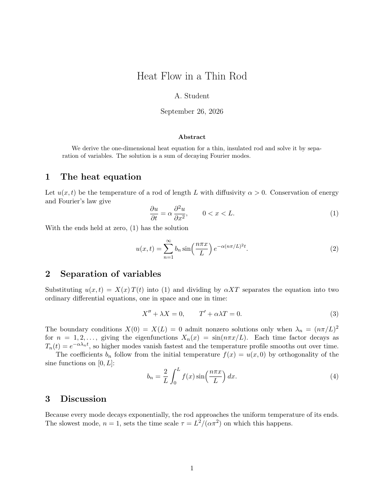

Live reload
When latexmk -pvc, texlab or tectonic writes the PDF, termleaf redraws it on the same page.
v0.1.1 · macOS and Linux
Run it in a pane next to your editor while you write LaTeX.

Illustration of your editor and termleaf paper.pdf in two panes. The page is a real render of the source.
When latexmk -pvc, texlab or tectonic writes the PDF, termleaf redraws it on the same page.
If a build leaves the PDF broken, termleaf keeps showing the last good page.
MuPDF renders each page, and termleaf draws it with Kitty graphics, Sixel or iTerm2 images.
Vim keys move between pages, and the mouse scrolls, zooms and follows links.
termleaf runs on macOS and Linux. The latest release is v0.1.1.
Installs a prebuilt binary from the latest release.
$ curl --proto '=https' --tlsv1.2 -LsSf https://github.com/backyardbit/termleaf/releases/latest/download/termleaf-installer.sh | shPrebuilt tarballs for macOS (Apple Silicon, Intel) and Linux (x64, ARM64) are on the releases page.
Builds from source.
$ cargo install termleafBuilding from source compiles MuPDF, which needs a C compiler, make and libclang. On Linux it also needs pkg-config and the fontconfig headers (libfontconfig-dev on Debian and Ubuntu).
$ termleaf thesis.pdfThe file must exist when termleaf starts.
termleaf needs a terminal that can show images. It picks the protocol from what the terminal reports.
| Terminal | Protocol | Scrolling |
|---|---|---|
| Kitty, Ghostty | Kitty graphics | smooth |
| herdr inside Kitty or Ghostty | Kitty graphics | smooth |
foot, xterm -ti vt340, mlterm, Windows Terminal (from WSL or SSH) | Sixel | repaints the page area |
| tmux 3.6 or later built with Sixel, inside a Sixel terminal | Sixel | repaints the page area |
| WezTerm, iTerm2, Konsole | iTerm2 images | repaints the page area |
With Kitty graphics, each piece of a page is sent once and scrolling only moves it. Sixel and iTerm2 images are one picture of the whole page area, sent again on every scroll, zoom and page change, which is slower, especially over SSH. --graphics kitty|sixel|iterm2 overrides the choice. In other terminals, termleaf exits with an error.
| Key | Action |
|---|---|
| j / k | next / previous page (takes a count, e.g. 5j) |
| gg / G | first / last page |
| <n>G <n>gg :<n> | go to page n |
| :$ | last page |
| + / - | zoom in / out (= also zooms in; takes a count) |
| s / a | fit width / fit page |
| e | open the source line under the pointer in your editor |
| F :follow :nofollow | follow your editor on / off |
| q :q Ctrl-C | quit |
| Input | Action |
|---|---|
| wheel | scroll |
| shift + wheel, sideways swipe | pan left / right |
| Ctrl + wheel | zoom at the pointer |
| drag | pan |
| click | follow a link (\ref, citations, table of contents) |
| double-click | switch between fit width and fit page |
| Alt + click, Ctrl + click | open the source line under the click in your editor |
| pinch | zoom at the pointer |
Pinch to zoom needs an OS permission. On macOS, the terminal app needs Input Monitoring. On Linux, your user must be in the input group. termleaf --no-pinch turns it off. Details are in the README.
Build with -synctex=1 (for example latexmk -pdf -synctex=1 -pvc). e or Alt + click opens the source line in your editor. Follow is on by default: as you move through a .tex file, termleaf shows the page with your cursor's line. F, :follow and :nofollow switch it, and termleaf --no-follow starts with it off.
| Editor | Inverse search | Follow | Setup |
|---|---|---|---|
| Neovim | over its RPC socket | over its RPC socket | none |
| Helix | typed keys, in a multiplexer | reads its statusline, in a multiplexer | none |
| Vim | typed keys, in a multiplexer | the Vim snippet | snippet.vim, for follow only |
Multiplexers: tmux, herdr, zellij 0.44 or later, GNU screen, kitty windows (with remote control on) and WezTerm panes. The editor runs in the same one as termleaf. Anywhere else, only Neovim works. termleaf --follow file.tex:line sends a position from scripts and editor keys. The README has the details and Helix's limits.